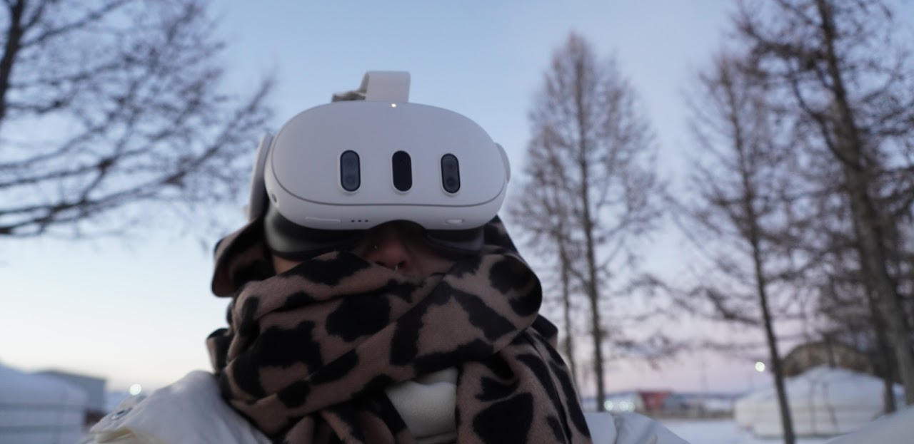
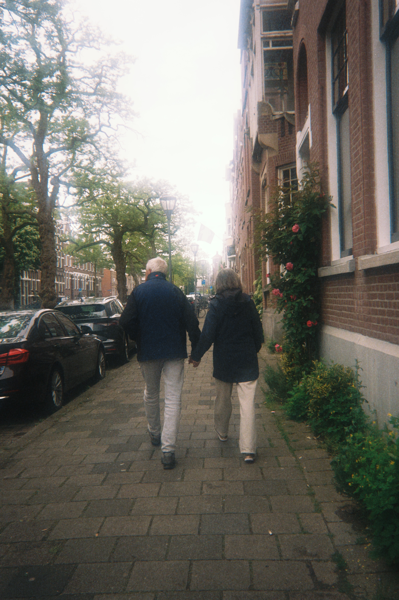
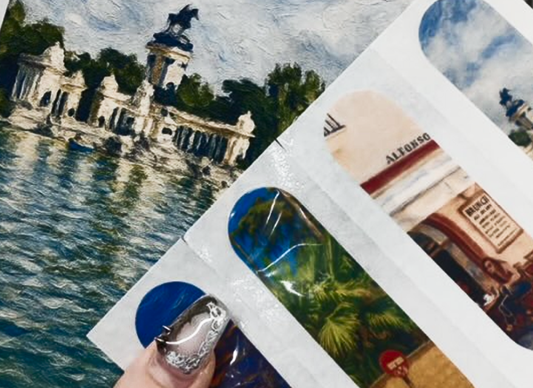
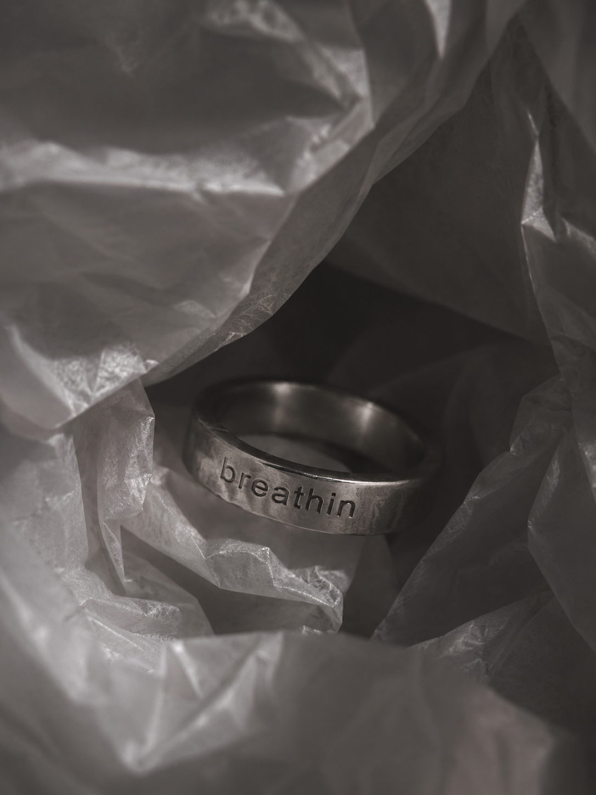
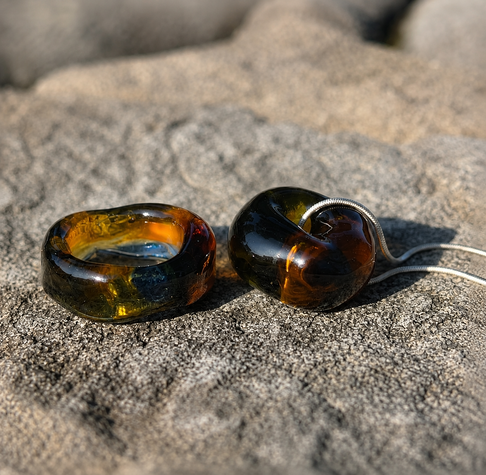
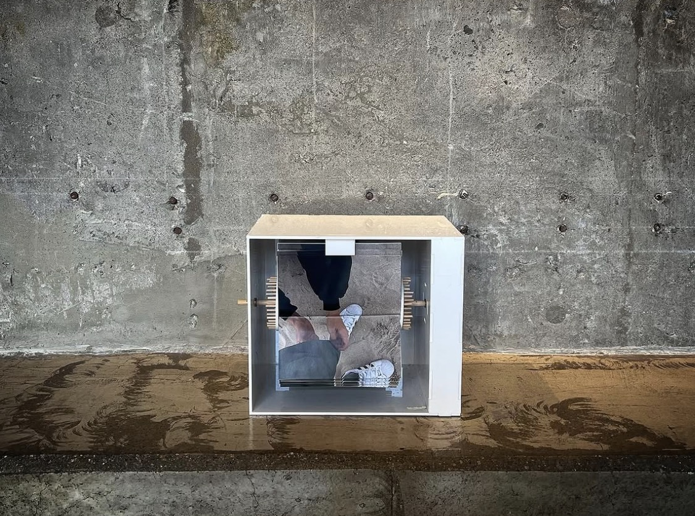
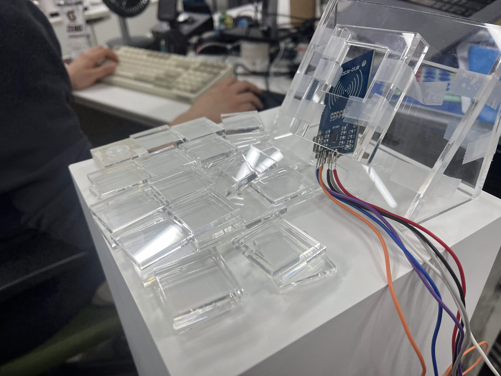

크리에이터로서, 저는 이런 것들을 만듭니다... As a creative, I make things such as...
나는 힘들 때 남을 위해 산다는 생각으로 누군가를 떠올리며 기도한다. 네덜란드에 오고 그런 마음으로 Wish라는 카드와 쥬얼리를 직접 디자인하고 제작했다. After making this, I happened to meet someone crying on the street. 우리는 서로를 위해 기도하기로 약속하며 카드를 주고 받았다. 언젠가 이 세상 어딘가에서 우연히 만나 서로를 위한 그 모든 wish를 이루었다 말하자면서.
One day, I will say, "Thank you Jaime. Because of your prayer, I really became a creative director presenting Korea."
When things get hard, I think of living for someone else, and I pray while picturing them in my mind. After coming to the Netherlands, with that same feeling, I designed and made a card and jewelry set called Wish myself. After making this, I happened to meet someone crying on the street. We promised to pray for each other and exchanged cards, saying that someday, somewhere in this world, we would meet again by chance and say that every wish we made for each other had come true.
One day, I will say, "Thank you Jaime. Because of your prayer, I really became a creative director presenting Korea."

나는 여행갈 때마다 기념품을 좀 의미있게 만드는 거 좋아하는데, 스페인에서의 꿈같은 시간을 찍은 사진들을 oil painting 느낌으로 바꿔서 데일밴드랑 엽서로 만들어 주변사람들에게 줬다. Whenever I travel, I like to make my souvenirs a bit more meaningful. I turned photos from my dreamlike time in Spain into an oil painting style, then made them into band-aids and postcards to give to the people around me.